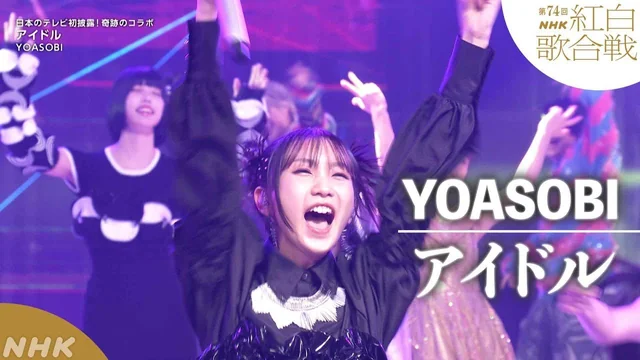
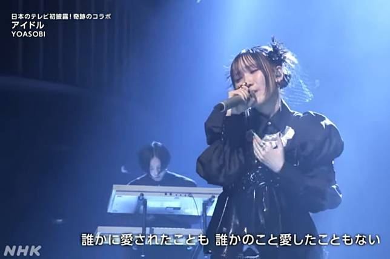

YOASOBI en la 74ª edición del "Kohaku Uta Gassen" de NHK
El final de la 74ª edición del prestigioso "Kohaku Uta Gassen" de NHK fue un momento destacado para la banda pues los ídolos japoneses que habían formado parte y competido en dicha edición subieron al escenario para una actuación memorable de la canción "Idol".
En un gesto sin precedentes, Yoasobi invitó a numerosos artistas considerados ídolos en la alineación del Kohaku a unirse a ellos en el escenario como una única banda de ídolos.
Entre los invitados se encontraban grupos japoneses como; Sakurazaka46, BE:FIRST, Real Akiba Boyz o NiziU entre otros, así como también ídolos del K-pop surcoreanos de renombre como; Seventeen, SKZ, Minamo, Stray Kids o NewJeans entre muchos otros.
En la actuación de "Idol" no solo destacó el increíble talento y carisma de todos los ídolos participantes, sino que también se mostró la buena colaboración y el talento compartido entre artistas de diferentes países y géneros musicales.

La presentación fue aclamada por el público entre los espectadores de todo Japón, destacando la importancia y la influencia duradera de los ídolos en la cultura musical contemporánea.
A continuación tienes el vídeo para que puedas disfrutar del espectáculo.